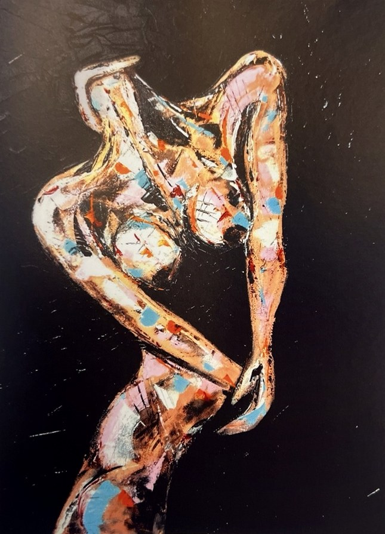
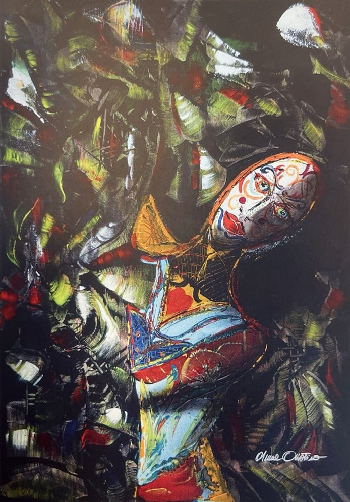
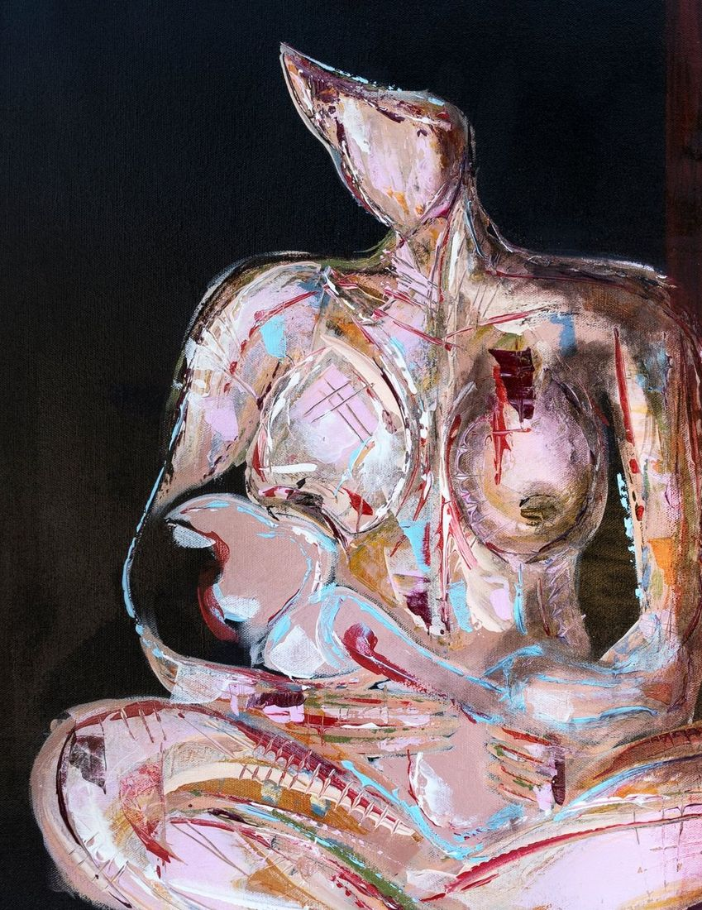

Volti di donna: la forza indomabile nei quadri di Anna Cristino
Per Anna Cristino essere Donna significa essere forza indomabile, perfezione indiscussa, luce fievole ma costante, una porta sempre aperta.
La donna al centro della pittura
Anna Cristino ha una predilezione per i volti di donna. Nei suoi quadri la donna è simbolo di forza interiore, resilienza e bellezza, esteriore e interiore: una figura che ama e sogna, ma che talvolta è anche oggetto di violenza, di sfruttamento, di derisione.
Tra le opere della serie ci sono «Eva», «Il Risveglio della Luna», «Risveglio» e «Metamorfosi». Il tema attraversa anche il suo percorso espositivo: tra le mostre, «La bellezza violata» a Taranto (2020) e «Arte è donna» a Terni (2021). Per sapere come nascono i suoi quadri, leggi la pagina sull’artista.
Come dipinge i volti
Con l’acrilico su tela, la spatola e le mani, a strati densi, fino a rendere il colore materico e quasi pulsante. Il rosso è una presenza costante: nei drappi, nelle linee, nelle labbra, nelle colature.
Le opere della serie Volti di donna
Clicca su un’opera per ingrandirla.










Chiedi di un’opera
Per conoscere prezzi e disponibilità delle opere, o per una commissione, parla direttamente con l’artista.